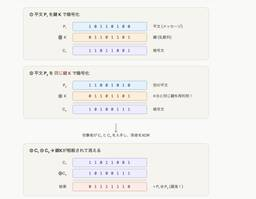
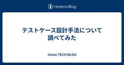

iimon TECH BLOG
https://tech.iimon.co.jp/
iimonエンジニアが得られた経験や知識を共有して世の中をイイモンにしていくためのブログです
フィード

自社プロダクトのSLIを選定するにあたって考えたこと
iimon TECH BLOG
はじめに こんにちは。iimonでSREをしている、木村幸寛です。 直近はSREチームとして、弊社で提供している「速いもんシリーズ」のSLI/SLOを定めようとしています。 この記事では、その中でも特にSLI策定に焦点を当て、実際に進めていく中で調べたことや考えたことを書き残し、私たちのチームと同じような状況の方に少しでも役立つことを目標とします。 ※本記事は、執筆時点での弊社におけるSLI/SLOの検討・計測の取り組みを紹介するものです。記載した指標や数値には検討中の内容や例示が含まれ、サービスの品質や稼働率をお客様に保証するもの（SLA）ではありません。 SLI/SLOとは SLI/SLO…
4日前

共通鍵暗号ってなーに？
iimon TECH BLOG
はじめに こんにちは！株式会社ｉｉｍｏｎでエンジニアをしている「みよちゃん」です！ 現在、新規プロダクトの担当をしていますが、外部のセキュリティレビューや脆弱性診断などに対応することがあり、セキュリティに関する意識が高まる今日この頃でございます。 また、部内の目標としても「DevSecOps」が挙げられており、セキュリティに関しては組織一丸となって知識の向上が求められています。 また、私は現在大学生でもありまして、今期の講義で「情報セキュリティ」を勉強しています。これはちょうど良い！ということで、今回は共通鍵暗号について勉強してきたので、記事にまとめてみようと思います。 共通鍵暗号 暗号は大き…
4日前
「CSSの勉強になるもの作って」の一言でFigma MakeがCSS学習ツールを作ってくれた
iimon TECH BLOG
Figma Makeとは やったこと 1：学習ツールを作る 2：CSSデバッグツールを作る 生成されたコードを読んでみた Figma Makeが向いている場面・向いていない場面 まとめ 参考リンク こんにちは！iimonでエンジニアをしているつかちゃんです。 最近Figma Makeという存在を知り元々Figmaは定例や仕様書の作成等でも使っていたので、気になったので試してみました！ そこで今回作ってみたのが「CSS学習ツール」と「効いていないCSSを検出するツール」の2つです！ Figma Makeとは FigmaのAI機能で、チャットでプロンプトを送るとUIとコードを生成してくれます。デザ…
4日前

テストケース設計手法について調べてみた
iimon TECH BLOG
目次 はじめに なぜテストケース設計を調べようと思ったか テスト設計の全体像をおさらいする テストケース設計技法の3つの分類 ブラックボックステストの代表的な技法 同値分割 境界値分析 デシジョンテーブル 状態遷移テスト ペアワイズ法 クラシフィケーションツリー法 ホワイトボックステストの代表的な技法 ステートメントテスト デシジョンテスト 経験ベーステストの代表的な技法 探索的テスト エラー推測 まとめ おわりに 1. はじめに こんにちは！iimonでフロントエンドエンジニアをしている「奥島」です！ 以前の記事で、テスト自動化の方針について整理しました。「どの層（ユニット/統合/E2E）に…
4日前

バーコードを知る
iimon TECH BLOG
バーコードの種類 JANコード ITFコード CODE39 CODE128 NW-7 バーコードの基本構成 バーコードシンボル クワイエットゾーン スタート/ストップキャラクタ（ガードバー） データ（メッセージ） バーコードの長さ バーコードの高さ ナロー/ワイドバー（スペース） チェックディジット モジュール バーコードの読み取り方式 CCD方式（Charge Coupled Device） レーザー方式 QRコード QRコードの構成要素 クワイエットゾーン ファインダパターン（切り出しシンボル） アライメントパターン タイミングパターン フォーマット情報 誤り訂正機能 まとめ 参考記事 普…
4日前

PreactとPreact/compatについて調べてみた
iimon TECH BLOG
こんにちは。iimonでエンジニアをしているhayashiと申します。 普段は主に拡張機能を開発しております。 今回はPreactについて調べてみました。 Preactとは Preact は「React と同じ書き方ができる、別実装の軽量ライブラリ」です。 Reactの機能全般を圧縮して再実装を目指すなら、すでに複雑で優れた設計のReact 本体に最適化を提案する方が合理的なので、軽量さを重視するというポジションをとっているみたいです。 それが故に素のPreactでは使えないメソッドやAPIがあったり、書き味も変わりますが、それもcompatという互換レイヤを適用することで、ほぼほぼ解決されて…
4日前

firebase Ai Logicを使って遊ぶ
iimon TECH BLOG
はじめに こんにちは。木村です。 先日 Firebase について調べる機会があったのですが、遅まきながら Firebase に AI を組み込める機能が追加されていることを知りました。 面白そうなので、調べてつかってみました。よろしくお願いします。 ※今回調べた内容は2026/09/23時点のものになります。 Firebase Firebase についての記事は先輩方がすでにいくつか書いてくださっているので詳細は省略します。 https://tech.iimon.co.jp/entry/2023/07/14/000000 https://tech.iimon.co.jp/entry/2024…
11日前
Vue→Reactリプレイス、仕様駆動(cc-sdd)でやってみた
iimon TECH BLOG
はじめに なぜ「仕様駆動」でリプレイスしたかったか cc-sddとは 特徴 導入方法 実際の進め方 1. /kiro-steering でプロジェクトの前提を記録する 2. 移行対象を仕様化する 3. 設計・タスクへの分解 4. /kiro-impl でタスクごとに実装する 5. レビューする やってみて良かったこと つまずいた・悩んだポイント Before/After まとめ 参考文献 はじめに こんにちは、iimonエンジニアのみやこしです！ 今回は、社内で担当した「VueからReactへのリプレイス作業」の中で、仕様駆動開発（Spec-Driven Development、以下SDD）を…
16日前
Tailwind CSS v4にしたらShadow DOMの中で一部のスタイルが効かなくなったので調べてみた
iimon TECH BLOG
はじめに 前提 原因 Shadow DOMとは v3の動きについて v4の動きについて なぜShadow DOMで壊れるのか @propertyはshadow rootの中では登録されない Invalid at computed-value timeでbox-shadowごと無効になる 何が壊れて何が壊れないか そのルール自身が、合成先の変数をすべて設定しているか var()に空フォールバックが付いているか 変数以外に実際の値も書かれているか 実測結果 回避策 案1 ドキュメントに@propertyを登録する 案2 @propertyをパースして自前でフォールバックを生成する フォールバックは…
25日前
eslint-disable の集計と、これからの書き方
iimon TECH BLOG
はじめに ディレクティブコメントとは ディレクティブコメントを集計する 集計方法 結果 不要になった経緯 どう書くか 理由を書く 範囲を最小にする 不要になったら気づける形にする ドキュメントとこのリポジトリの差 不要な eslint-disable が残っていた理由 これからどう書くか 書き方 できること おわりに 参考 はじめに 最近はコードコメントについて関心があります。その中で気になったのが、ディレクティブコメントと呼ばれる種類のコメントです。 ディレクティブコメントは、// @ts-ignore や // eslint-disable-next-line のように、ツールが読むコメン…
1ヶ月前
【実践編】Claude Code でIssue修正をどこまで委任できるか試してみる
iimon TECH BLOG
tech.iimon.co.jp こんにちは！iimonでエンジニアをしている なかむ です。 普段は主に「入力速いもん」の拡張機能を開発しています！ 今回は前回の「Claude Code でバグ修正をどこまで委任できるか試してみる 計画編」の続き、実践編です。 気づけばもう8月下旬ですね。前回ブログを書いてから早くも3ヶ月近くが経ちました。この間に新しいモデルが出たり機能が増えたりと、AI周りの進歩には目覚ましいものがあります。 前回は Claude Code Routines でどこまでAIに技術負債の修正を任せられるか、という計画を書きました。既存Issueに難易度ラベルを付ける評価Sk…
1ヶ月前
DjangoでSQL実行の承認フローを作ってみた
iimon TECH BLOG
はじめに Webサービスを運用していると、本番のデータを修正する場面が出てくるかと思います。 その場合、専用の管理画面を作るほどでもなく、データベースに対して直接SQLを実行するというケースも少なからずあると思います。 しかし、生のSQLを本番に直接投げるやり方には、いくつも問題があります。 記録が残らない — 誰が・いつ・どんなSQLを・何のために実行したのかが後から追えない レビューが挟まらない — 1人で書いて1人で実行できてしまうので、内容の妥当性を誰もチェックしていない ミスがそのまま事故になる — WHERE の付け忘れ、対象IDの取り違え、意図しない行数の更新。取り返しがつかない…
2ヶ月前
そのテスト、別のコードで通ってます — git worktree × Docker 並列開発の静かな罠
iimon TECH BLOG
はじめに 株式会社iimonでエンジニアをしている「みよちゃん」です。 8月に入り暑さが本格化してきましたね。最近自分は、通勤すれば汗だく・リモートワークをすればエアコンで電気代が高くつくという、ジレンマに陥っています。少しでも暑さを和らげるために、今日は怖い話をしようと思います。 これは、実際に自分が遭遇した出来事です。 その日も、いつものように AI エージェントにタスクを任せてテストを流していました。 docker compose exec backend pytest — 結果は、全てグリーン。安心して次へ進もうとしましたが、理由のない違和感が残ります。違和感をもとに実行されたテストを…
2ヶ月前
Chrome公式のAIエージェント向けスキル「modern-web-guidance」をみてみる
iimon TECH BLOG
はじめに こんにちは。iimonでエンジニアをしている保田です。 Claude CodeなどのAIコーディングエージェントにフロントエンドのコードを書かせると、動きはするけど、書き方が数年前のままというコードが出てくることがあります。 かつてはJavaScriptでしか実現できなかったUIの挙動が、ここ数年でCSSやHTMLの標準機能として次々と取り込まれています。 しかし、LLMの学習データにはJSで実現していた時代のコードが圧倒的に多いため、今ならブラウザ標準の機能だけで簡単に実装できることでも、JavaScriptを長々と書いてしまうことがあります。 こういった問題に対して、Google…
2ヶ月前
WebAssemblyっていつ使うんですか？
iimon TECH BLOG
はじめに Wasmとは？ なぜ作られたのか Wasmで何ができるのか できないこと なぜブラウザに持ち込むのか 実際にはどう使われているのか Wasmが候補に入るのはどんなときか まとめ 参考 はじめに こんにちは！株式会社iimonでエンジニアをしている遠藤です。 WebAssembly（以下Wasm）は「RustやC++で書いたコードをコンパイルしてブラウザで実行できるらしい」程度のことは知っていました。ただ業務で使ったことがなく、JavaScriptやサーバーサイドとの使い分けはあまりイメージできていませんでした。 ちょうど社内勉強会の担当が回ってきたので、これを機に、「Wasmはどんな…
2ヶ月前
使い方を伝えるために ― Cognitive WalkthroughによるLearnability評価
iimon TECH BLOG
はじめに こんにちは。タクシです。 最近は新機能のデザインもしつつ、既存機能・画面のUI/UX改善を行うことも増えてきました。 機能によっては、より複雑で多様な操作フローが発生する中で、使いやすいUIにするために検討・リサーチを続けています。 使いやすいUIを作りたい！と一言で言っても、使いやすいとはどう測ればいいのでしょうか？ ユーザビリティの専門家であるJakob Nielsenは、Usability（使いやすさ）を大きく5つの要素に分解できるとしています（Nielsen, "Usability 101: An Introduction to Usability"）。 Learnabili…
2ヶ月前
TypeScriptの依存関係違反を静的解析で防ぎたい
iimon TECH BLOG
はじめに こんにちは、いきなり暑くなって辛いです。木暮です。 普段、業務の中でTypeScriptのコードレビューをしていて依存関係の違反が気になってしまいがちです。 AIにコード生成させても出力結果はまちまちですし、これを一つずつレビューするのも骨が折れます。 ディレクトリを切ってコーディングルール化しても自由にimportできてしまうので強制力はありません。 なので何か仕組みで改善できないのかClaudeに聞いてみました。 すると静的解析でガードできるとのことでした。ライブラリの名前はdependency-cruiserです。 今回はこのライブラリを使うことによってどのように依存関係を強制…
2ヶ月前
__init__.py って必要？ 実際に検証してみた 【Python】
iimon TECH BLOG
1. はじめに 2. PEP 420 と2種類のパッケージ — 誤解の起源 3. 今回のパッケージのディレクトリ構成図 4. sys.path はどう作られるか — __init__.py の検証に入る前に ①シェルが実行ファイルを探す。 ②インタプリタ本体の初期化。 ③sys.pathの構築。 ④siteモジュールの自動 import。 5. 空の __init__.py は何を宣言しているのか 存在するだけで成立する宣言 6. 省略すると実際に何が起きるか — 手を動かして検証した 再現した実害 なにが問題なのか？ 7. まとめ 8. さいごに 参照 1. はじめに ｉｉｍｏｎでエンジニア…
2ヶ月前
Webアプリに地図機能を入れる方法を作ってた（Leaflet）
iimon TECH BLOG
はじめに こんにちは！iimonでエンジニアをしている〇〇です！ 「Webアプリに地図を出したい」と思ったとき、最初にこう悩みました。 「地図のライブラリ、種類が多すぎて、どれを使えばいいの？」 いろいろ試した結果、まずは Leaflet が一番おすすめだと感じました。無料で、APIキーもいらず、すぐに動かせるからです。 この記事では、 地図ライブラリにはどんな種類があるか なぜ Leaflet がおすすめなのか かんたんなコード（実際に動くデモつき） Google Maps・MapLibre などほかの選択肢 を、やさしくまとめます。 地図と聞くとむずかしそうですが、やることは大きく3ステッ…
3ヶ月前
Redashで初めてSQLを書いてみた話
iimon TECH BLOG
はじめに こんにちは！iimonでエンジニアをしているつかちゃんです！ SQLという単語は入社してからずっと耳にしていました。でも自分が触ることはなく、なんとなく「データベースに問い合わせるやつ」くらいのイメージしか持っていませんでした。 今回、Redash経由でデータを集計する機会があり、初めてSQLを自分で書くことになりました。実際に書いて、エラーになって、直して、結果が返ってきたとき「あ、これがSQLか！」となりました。 使ったのはRedashから Athena に接続し、federated query という仕組みでデータを取得するというものでした。SQLの書き方でつまずいたポイントを…
3ヶ月前
LLM-as-a-Judgeを採点器で終わらせないために、評価ケース化と人間確認ゲートを整理してみた
iimon TECH BLOG
こんにちは、エンジニアの須藤です。今回はAWSサミットに参加して、LLMアプリケーションでは評価が重要だという話があったので、LLM-as-a-Judgeについて整理してみることにしました。 実際のLLMアプリケーションの運用では、振る舞いがプロンプトの変更やモデルバージョンの変更で崩れたり、一度修正した内容が次のリリース時に壊れたり、仕様オーナーの判断が属人化してしまうということが起こり得ます。 判定にLLMを使ってみよう、と単純にjudgeを呼び出すだけでそれらが解決するわけではなく、どんな内容を、どんな単位で考え、人間の判断との一致を測るか、そして信頼性を維持しながらどこまで自動化してど…
3ヶ月前
MCPサーバーを自作して動かしてみる
iimon TECH BLOG
■はじめに ■MCP とは ■環境 ■最小の MCP を作って動かす ◆1. プロジェクト作成 ◆2. サーバー本体 ◆3. ビルド ◆4. Claude Code に登録して動かす ■同じサーバーに GitHub ツールを足す ◆何を作るか ◆環境構築 ◆GitHub アクセス層（src/github.ts） ◆ツール登録（src/index.ts に追記） ◆認証（GITHUB_TOKEN） ◆動かす ■最後に ■はじめに こんにちは！ ｉｉｍｏｎでエンジニアをしています「しらみず」です。 最近、いろんなMCPを接続して触ってみているのですが、自作できることがわかったので自作してみました。…
3ヶ月前
今更だけどTypeScriptのLinterについて調べてみる
iimon TECH BLOG
はじめに Linterについて ESLintで見てみるLinterの基礎 TypeScriptのモダンなLinterたち まとめ さいごに 参考 はじめに こんにちは！ｉｉｍｏｎでエンジニアをしているひがです！ 先日TSKaigi 2026で登壇をしてきました！ https://2026.tskaigi.org/talks/7 今年のTSKaigiも勉強になる公演がたくさんあり、とても楽しかったです。 色々な公演を聴いている中で、「結構TypeScriptのLinterに関する話題も多いな〜」と思い、「そういえばあまりLinterについて調べたことがなかったな〜」と思ったので、今回記事にしてみ…
3ヶ月前
React NativeのExpoって何？Expo Go・EAS・Dev Client・ビルドの違いを整理してみた
iimon TECH BLOG
はじめに さまざまなExpoの主な意味合い Expo(フレームワーク・SDK) Expo Go(動作確認アプリ) EAS(Expo Application Services) (補足) ネイティブコードとは アプリの実行環境とビルド方法 実行環境 Expo Go Development Build(Dev Client) Production Build(スタンドアロンアプリ) ビルド方法に関して 再ビルドに関して Dev Clientは「ネイティブ」と「JavaScript」の二層でできている 自分自身がハマったポイント Expo Goでネイティブライブラリが動かない npx expo in…
4ヶ月前
Djangoのマイグレーションを初心者なりに理解する
iimon TECH BLOG
こんにちは、木村です！最近Djangoに触れる機会がちょくちょくあるんですが、DB操作でいつもおっかなびっくりやっています。対応する時にそれなりに調べてはいるんですが、毎度微妙に自信が持てずにいます。 せっかく触る機会をもらったのだから初心者なりにDjangoでのマイグレーション操作について調べたことをまとめました。よろしくお願いします！ Django そもそもDjangoとは何か。Pythonで実装されたWEBアプリケーションフレームワークです。認証や管理画面、DB操作などのWeb開発で必要なものを揃えています。 特徴として挙げられるのは主に次の二つです。 MTV(Model/Templat…
4ヶ月前
【JavaScript】クロージャとは何か
iimon TECH BLOG
前提知識としてのスコープ グローバルスコープ 関数スコープ ブロックスコープ レキシカルスコープ（字句スコープ） スコープチェーン クロージャ クロージャの実例 プライベート変数の定義 関数ファクトリーとしての使い方 注意点 まとめ 参考文献・記事 クロージャについて、その名称は知っているものの具体的な仕組みについてはよく分かっていなかったので、この機会に調べてみました。 前提知識としてのスコープ クロージャを理解するにあたっての前提知識として、基本ではありますが重要な概念であるスコープについて軽く触れていきます。 スコープとは、実行中のコードから参照できる変数や関数の範囲のことです。スコープ…
4ヶ月前
HTTP/2の多重化とは何か——ストリームとフレームを図解する
iimon TECH BLOG
はじめに HTTP/1.1の何が遅かったのか Keep-Aliveで改善したが… 6本並列接続 HTTP/2の多重化とは何か HTTP/1.1との比較 フレームとは何か フレームの役割 主なフレームの種類 ストリームとは何か ストリームのイメージ フレームとストリームの関係 多重化の全体像 HTTP/2で解決されなかった問題 TCPレベルのHead-of-Line Blocking さいごに 参考文献 はじめに こんにちは、iimonエンジニアのみやこしです！ 先日、社内の勉強会でHTTPについて触れる機会がありました。正直これまであまり深く理解できていなかったので、これを機にしっかり調べてみ…
4ヶ月前
LINEやInstagramで送った写真の画質が落ちる仕組み
iimon TECH BLOG
はじめに 画像圧縮の種類 可逆圧縮（Lossless） 非可逆圧縮（Lossy） AirDrop・LINE・Instagramで何が起きているか AirDrop LINE Instagram JPEG の圧縮の仕組み 1. ブロックへの分割 2. DCT 3. 量子化 なぜ再保存するたびに劣化するのか まとめ さいごに 参考 はじめに 友人に写真を送る時、LINE や インスタ だと画質悪いから、AirDropで送ってと言われたことがあります。写真の画質が落ちる仕組みについて気になったので調べてまとめました。 この記事では以下の内容を扱います。 AirDrop・LINE・Instagramで画…
4ヶ月前
海底ケーブルについて
iimon TECH BLOG
最近、海底ケーブルに関する記事を目にしました。 海底ケーブルの名前自体は知っていたものの、 どのような仕組みで動いているのかはあまり理解していなかったため、この機会に調べてみることにしました。 今回、主に以下のような点について調査しました。 海底ケーブルは、どういう仕組みで動いているのか 衛星通信が海底ケーブルの代替となる可能性はあるのか 自分の日常のどの部分が海底ケーブルに支えられているのか AWSのようなクラウドサービスとの関係はどうなっているのか 国内サービスを利用する場合、多くの通信は国内の光ファイバー網だけで完結します。 一方で、海外のサービスや海外リージョン上のデータへアクセスする…
4ヶ月前
A2UIの仕組みを整理して動かしてみる
iimon TECH BLOG
はじめに こんにちは。iimonでエンジニアをしている保田です。 最近Generative UIというキーワードを見かけることが増え、気になって調べてみました。 AIチャットの応答がテキストだけでなく、カードやフォームなどのUIで返ってくることもよく見かけるようになりました。 これを実現する仕組みの一つが、Googleが公開したA2UI（Agent to UI）プロトコルです。 この記事ではGenerative UIの実装パターンを整理したうえで、A2UIの仕組みを解説し、公式デモを動かしながら実際の通信内容を確認していきたいと思います。 今回はA2UIの概要とプロトコルの仕組みに焦点を当てて…
4ヶ月前